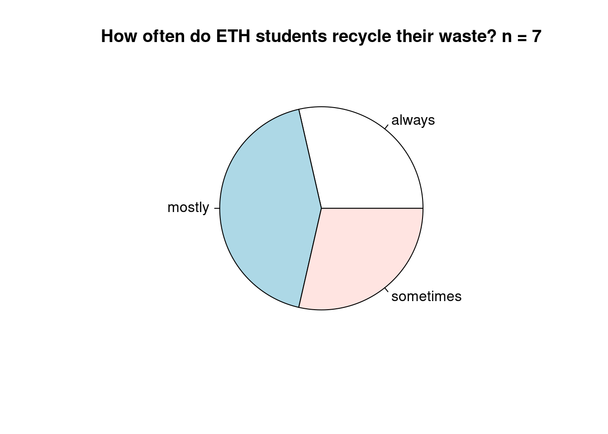
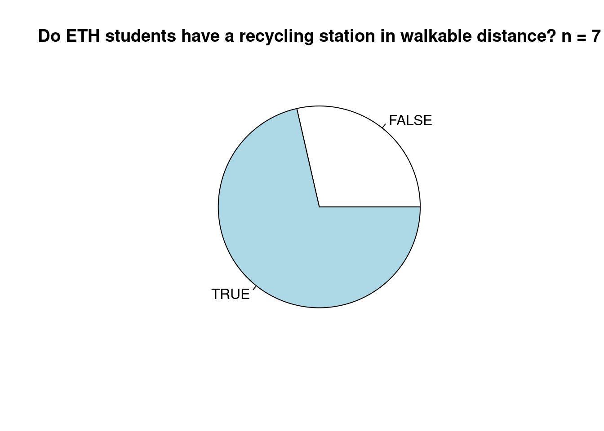
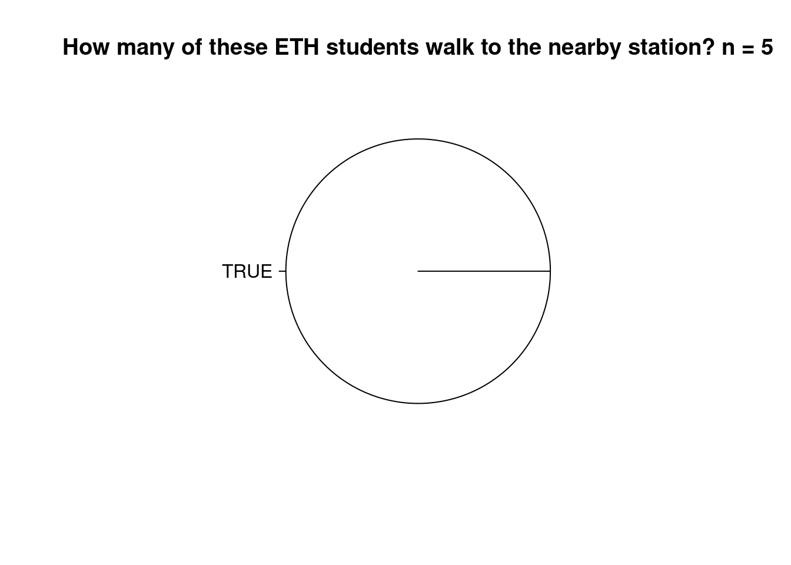
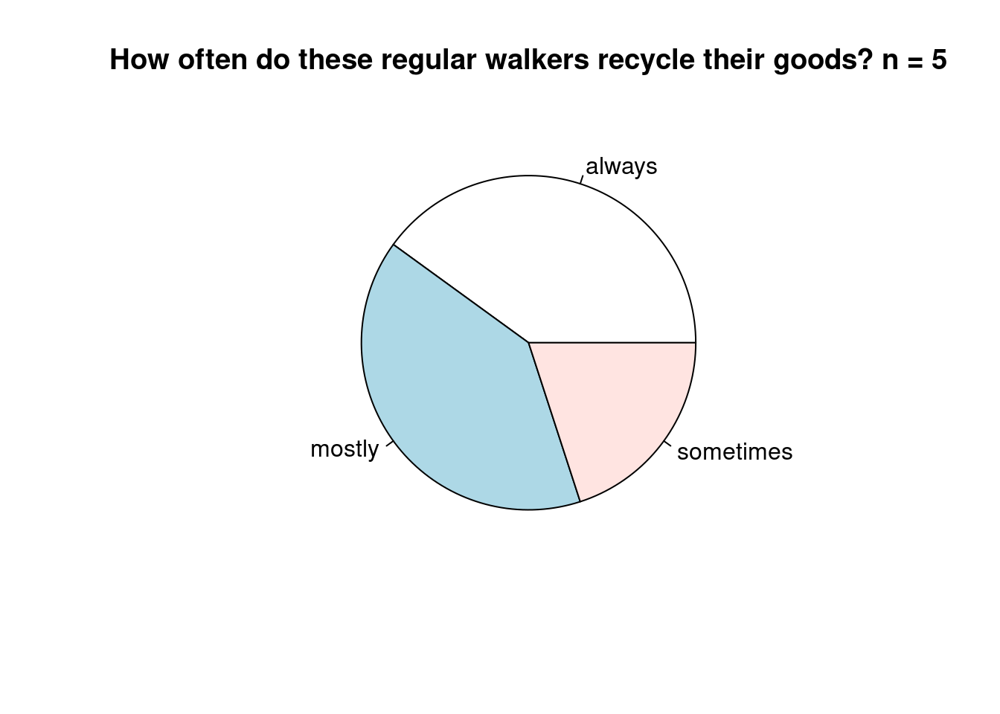

The following point plot Figure 1 displays when survey was taken and how the users rated ETH’s recycling situation. It is possible that the given rating reflected the tidyness at ETH at that time.
Figure 1: Survey timeline and ETH’s recycling rating
The next bar plot Figure 2 shows the relation between the participants’ recycling frequency and their rating of ETH’s recycling situation. Generally, people who recycle more often tend to give a higher rating.
Figure 2: Rating of ETH’s recycling situation by groups with different recycling frequencies
The following pie chart visualizes the recycling frequency:
# summarize the data# count the occurences of frequency category, calculate percentagessurvey_pie_freq <- survey_vis |>group_by(recycling_frequency) |>summarize(n =n(),fraction =n()/nrow(survey_vis))# create pie chart# had help by perplexity.ai, link:# https://www.perplexity.ai/search/how-to-create-a-pie-chart-with-f0XcFVCEQYOZ7Mmn3crgeApie(survey_pie_freq$fraction, labels = survey_pie_freq$recycling_frequency, main ="How often do ETH students recycle their waste? n = 7")

The following two pie chart visualizes how many people have a walkable station nearby, and how many people walk to a recycling station to recycle their waste.
survey_pie_walkable <- survey_vis |>group_by(walkable_station) |>summarize(n =n(),fraction =n()/nrow(survey_vis))pie(survey_pie_walkable$fraction, labels = survey_pie_walkable$walkable_station, main ="Do ETH students have a recycling station in walkable distance? n = 7")

# create dataframe only with people with station in walkable distanceesurvey_walkable <- survey_vis |>filter(walkable_station =="TRUE")# create summary of this df for pie chartsurvey_pie_walker <- survey_walkable |>group_by(regular_walker) |>summarize(n =n(),fraction =n()/nrow(survey_walkable) )# create pie chartpie(survey_pie_walker$fraction, labels = survey_pie_walker$regular_walker, main ="How many of these ETH students walk to the nearby station? n = 5")

It is satisfying to see that all 5 students who have a walkable station nearby will walk there to recycle their waste.
How many of these selected people are regular recyclers?
survey_pie_freq2 <- survey_walkable |>filter(regular_walker =="TRUE") |>group_by(recycling_frequency) |>summarize(n =n(),fraction =n()/nrow(survey_walkable) )# create pie chartpie(survey_pie_freq2$fraction, labels = survey_pie_freq2$recycling_frequency, main ="How often do these regular walkers recycle their goods? n = 5")

Table of the data with gt()
The following table sumarizes the relation between recycling frequency and the rating that students give to ETH’s recycling situation:
survey_table_recycler <- survey |>group_by(recycler_cat) |>summarise(count =n(),mean =mean(rating),sd =sd(rating),min =min(rating),max =max(rating) )# create quick table with gtsurvey_table_recycler |>gt() |>tab_header(title ="Rating of recycling at ETH by students, grouped by recycling frequency",subtitle ="Data from 7 students in 2025") |>cols_label(recycler_cat ="recycling_frequency",mean ="mean_rating")
Rating of recycling at ETH by students, grouped by recycling frequency
Data from 7 students in 2025
recycling_frequency
count
mean_rating
sd
min
max
always
2
4.0
0.0000000
4
4
mostly
3
3.0
0.0000000
3
3
sometimes
2
2.5
0.7071068
2
3
Table of the data with kable()
In Table 1 , the same numbers are displayed, showing the recycling frequency and how it corresponds to ETH’s recycling rating. But this time, the table was generated with the kable() function.
Table 1: Rating of recycling at ETH by students, grouped by recycling frequency. Data from 6 students.
recycling_frequency
count
mean_rating
sd
min
max
always
2
4.0
0.0000000
4
4
mostly
3
3.0
0.0000000
3
3
sometimes
2
2.5
0.7071068
2
3
Table 1 shows that people who always recycle their waste are rating the recycling situation at ETH higher than others. People who recycle “most of the times” rate the recycling situation 1 point lower, at 3 stars.